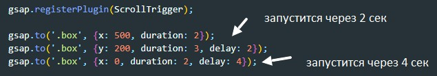
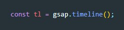
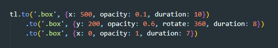
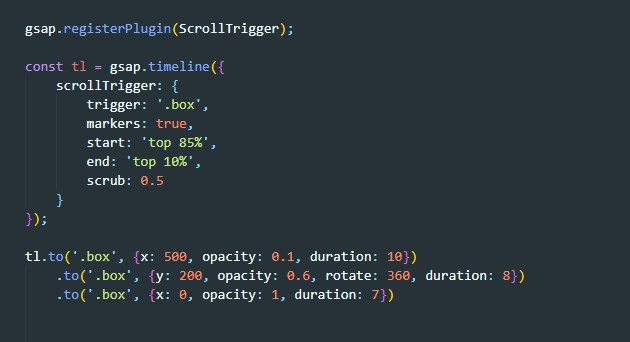

Допустим что нам необходимо сделать у одного элемента подряд три анимации, причем задача такая, что анимация должна проигрываться поочередно. Есть свойство delay c помощью которого можно задать задержку анимации. Вот как бы это выглядело:
Но такой способ ОЧЕНЬ и ОЧЕНЬ не удобный, так как нам пришлось бы каждый раз высчитывать через сколько запустить анимацию. К счастью GSAP предоставляет нам возможность управлять timeline-ом анимации
Первое что нам нужно сделать это создать экземпляр объекта timeline. Объект помещаем в переменную (в нашем примере это tl)
Далее мы уже у переменной tl вызываем метод to и в него передаем параметры первой анимации. Ну а дальше используем чейнинг
Теперь что бы управлять анимацией, мы методу timeline должны передать такой же объект, который мы передавали до этого методу to
